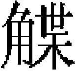

輿服志一
孔子有言：「大矣哉吴王！未能言冠而欲冠也。」憲宗二年，用冕服祭天於日月山。是時，氊裘毳幕，百度草創，獨汲汲然效先王之法服，與大差之冠何以異？是故用夏變夷，必自衣冠始焉。自憲宗以下，至世祖始製祭服。至成宗，祭服始有法服、公服之别。至武宗，始議親祀，冕無旒，服大裘而加衮冕。至英宗，始服衮冕享於太廟，備鹵簿，造五輅。至文宗，始服大裘、衮冕，親祀昊天上帝於南郊。《春秋》之義，予夷狄者不一而足也，豈不信歟？今爲《輿服志》，其類有四：曰冕服，曰璽寶，曰輿輅，曰儀衛隊仗。觀其因時損益，彬彬然以爲一代之法，雖唐、宋亦何以尚之哉！
皇帝冕服 皇太子冠服 三獻官以下祭服 都監庫 社稷祭服 宣聖廟祭服 百官冠服 儀衛服色［一］ 樂服 質孫 服色等第
皇帝冕服
至元六年七月，製太常祭服。大德六年三月，祭天於麗正門外，分獻官以下諸執事各具公服行禮。大禮用公服自此始。
九年十一月，冬至祭享，用冠服，依宗廟見用者制，其後祭祀或合祀天地，獻攝執事，續置冠服，於法服庫收掌法服二百九十有九，公服二百八十，窄紫二百九十有五。武宗即位，博士李之紹、王天祐疏陳：「親祀冕無旒，服大裘以黑羔皮爲之而加衮冕。」不果用。延祐元年十二月，定百官士庶服色等第。至治元年，帝親享太室，服衮冕。二年，始陳鹵簿，親享太廟。至順元年，帝服大裘、衮冕，親祀南郊。冕服之制，至是始定云。
皇帝衮冕：制以漆紗，上覆曰綖，青表朱裏。綖之四周，匝以雲龍。冠之口圍，縈以珍珠。綖之前後，旒各十二，以珍珠爲之。綖之左右，繫黈纊二，繫以玄紞，承以玉瑱，纊色黄，絡以珠。冠之周圍，珠雲龍網結，通翠柳調珠。綖上横天河帶一，左右至地。珠鈿窠網結，翠柳朱絲組二，屬諸笄，爲纓絡，以翠柳調珠。簪以玉爲之，横貫於冠。
衮龍服，制以青羅，飾以生色銷金帝星一、日一、月一、升龍四、複身龍四、山三十八、火四十八、華蟲四十八、虎蜼四十八。
裳，制以緋羅，飾以文繡，凡一十六行。每行藻二、粉米一、黻二、黼二。
中單，制以白紗，絳緣，黄勒帛副之。
蔽膝，制以緋羅，有褾。緋絹爲裏，袍上著之，繡複身龍。
玉佩，珩一、琚一、瑀一、衝牙一、璜二。衝牙以繫璜，珩下有銀獸面，塗以黄金，雙璜夾之。次又有衡，下有衝牙。傍别施雙的以鳴，用玉。
大帶，制以緋白二色羅，合縫爲之。
玉環綬，制以納失失，上有三小玉環，下有青絲織網。
紅羅鞾，制以紅羅爲之，高靿。
履，制以納失失，有雙耳，帶鈎，飾以珠。
襪，制以紅綾。
至元十二年十一月，博士議擬：「冕天版長一尺六寸，廣八寸，前高八寸五分，後高九寸五分，身圍一尺八寸三分，用青羅爲表，紅羅爲裏，周迴緣以黄金。天板下四面。珠網結子，花素墜子，前後共二十有四旒，以珍珠爲之。青碧線織天河帶，兩頭各有珍珠金翠旒三節，玉滴子節花全。紅線組帶二，上有珍珠金翠旒，玉滴子，下有金鐸二。梅紅繡款幔帶一，黈纊二，珍珠垂繫，上用金萼子二。簪窠款幔組帶鈿窠各二，内組帶窠四，並鏤玉爲之。玉簪一，頂面鏤雲龍。衮衣，用青羅夾製，五采間金，繪日、月、星辰、山、龍、華蟲、宗彝。正面日一，月一，升龍四，山十二，上下襟華蟲、火各十二對，虎蜼各六對。背星一，升龍四，山十二，華蟲，火各十二對，虎蜼各六對。中單，用白羅單製，羅領褾襈。裳一，帶褾襈全，紅羅八幅夾造。上繡藻、粉米、黼、黻藻三十三，粉米十六，黼三十二，黻三十二。蔽膝一，帶褾襈，紅羅夾造八幅，上繡升龍二。綬一幅，六采織造，紅羅托裏。小綬三色，同大綬，銷金黄羅綬頭全，上間施二玉環，並碾雲龍。緋白大帶一，銷金黄帶頭，鈿窠二十有四。紅羅勒帛一，青羅抹帶一。佩二，玉上、中、下璜各一。半月各二，並碾玉爲雲龍文。玉滴子各二，並珍珠穿造。金篦鉤，獸面，水葉環釘全。涼帶一，紅羅裏，鏤金爲之；上爲玉鵝七，撻尾束各一，金攀龍口，玳瑁襯釘。舄一，重底，紅羅面，白綾托裏，如意頭，銷金黄羅緣口，玉鼻，飾以珍珠。金緋羅錦襪一。」
大德十一年九月，博士議：「唐制，天子衮冕，垂白珠十有二旒，以組爲纓，色如其綬，黈纊充耳，玉簪導。玄衣纁裳，凡十二章。八章在衣，日、月、星辰、山、龍、華蟲、火、宗彝；四章在裳，藻、粉米、黼，黻，褾領爲升龍，皆織成之。龍章以下，每章一行，每行十二。白紗中單，黼領，青褾襈裾［二］，黻加龍、山、火三章。毳冕以上，火、山二章。繡冕，山一章。玄冕無章。革帶、大帶、玉佩、綬、韈，與上同。舄加金飾。享廟、謁廟及朝遣上將、征還飲至，踐祚加元服、納后、元日受朝及臨軒册拜王公，則服之。又宋制，天子服有袞冕，廣尺二寸，長四寸，前後十有二旒，二纊，並貫珍珠。又有珠旒十二，碧鳳銜之，在珠旒外。冕板，以龍鱗錦表。上綴玉爲七星，傍施琥珀餅、犀各二十四，周綴金絲網鈿，以珍珠雜寶玉，加紫雲白鶴錦裏。四柱飾以七寶，紅綾裏。金飾玉簪導，紅絲絛組帶。亦謂之平天冠。衮服青色，日、月、星、山、龍、雉、虎、蜼七章，紅裙，藻、火、粉米、黼、黻五章。紅蔽膝，升龍二，並織成，間以雲彩，飾以金鈒花鈿窠，裝以珍珠、琥珀、雜寶玉，紅羅襦裙，繡五章，青縹襈裙。六采綬一，小綬三，結三，玉環三。素大帶，朱裏，青羅四紳帶二，繡四紳盤結。綬帶飾並同兖服。白帶中單，甘羅袾帶，紅羅勒帛，鹿盧玉具劍，玉縹首鏤白玉雙佩，金飾，貫珍珠。金龍鳳革帶，紅韈赤舄，金鈒花，四神玉鼻。祭天地宗廟、受册尊號、元日受朝、册皇太子，則服之。」事未果行。
至延祐七年七月，英宗命禮儀院使八思吉斯傳旨，令省臣與太常禮儀院速製法服。八月，中書省會集翰林、集賢、太常禮儀院官講議，依秘書監所藏前代帝王衮冕法服圖本，命有司製如其式。
皇太子冠服：衮冕，玄衣，纁裳，中單，蔽膝，玉佩，大綬、朱襪，赤舄。
至元十二年，博士擬衮冕制，用白珠九旒，紅絲組爲纓，青纊充耳，犀簪導。青衣、朱裳，九章。五章在衣，山、龍、華蟲、火、宗彝；四章在裳，藻、粉米、黼、黻。白紗中單，青褾襈裾［三］。革帶，塗金銀鉤。

蔽膝，隨裳色，爲火、山二章。瑜玉雙佩，四采織成大綬，間施玉環三。白襪朱舄，舄加金塗銀釦。大德十一年九月，照擬前代制度。唐制，皇太子衮冕，垂白珠九旒，紅絲組爲纓，青纊充耳，犀簪導。玄衣、纁裳，九章，五章在衣、龍、山、華蟲、火、宗彝，四章在裳，藻、粉米、黼、黻，織成之，每行一章，黼、黻重以爲等，每行九。白紗中單，黼領，青褾襈裾。革帶，金鉤，大帶。蔽膝，隨裳色，火、山二章，玉具劍，金寶飾玉縹首，瑜玉雙佩。朱組帶大綬，四采赤白縹紺，純朱質，長丈八尺，首廣九寸。小雙綬，長二尺六寸，色同大綬，而首半之，間施玉環三。珠襪赤舄，加金飾。侍從祭祀及謁廟、加元服、納妃，服之。宋制，皇太子，衮冕，垂白珠九旒，紅絲組爲纓，青纊充耳，犀簪導。青衣、朱裳，九章。五章在衣，山、龍、華蟲、火，宗彝；四章在裳，藻、粉米、黼、黻。白紗中單，甘褾襈裾，革帶，塗金銀鉤。蔽膝，隨裳衣，火、山二章。瑜玉雙佩，四采織成大綬，間施玉環三。白韈、朱舄、舄加塗金銀飾。加元服、從祀、受册、謁廟、朝會，服之。已擬其制，未果造。
三獻官及司徒、大禮使祭服：籠巾貂蟬冠五，青羅服五，領、袖、襴、俱用皂綾。紅羅裙五，皂綾爲襴。紅羅蔽膝五，其羅花樣俱係牡丹。白紗中單五，黄綾帶。紅組金綬紳五，紅組，金譯語納失失，各佩玉環。象笏五，銀束帶五，玉佩五，白羅方心曲領五，赤革履五對，白綾襪五對。
助奠以下諸執事官冠服：貂蟬冠、獬豸冠、七梁冠、六梁冠、五梁冠、四梁冠、三梁冠、二梁冠二百，青羅服二百，領、袖、襴俱用皂綾。紅綾裾二百，皂綾爲襴。紅羅蔽膝二百，紫羅公服二百，用梅花羅。白紗中單二百，黄綾帶。織金綬紳二百，紅一百九十八，青二，各佩銅環二。銅束帶二百，白羅方心曲領二百，銅佩二百，展角幞頭二百，塗金荔枝帶三十，烏角帶一百七十，皂靴二百對，赤革履二百對，白綾襪二百對，象笏三十，銀杏木笏一百七十。
凡獻官諸執事行禮，俱衣法服。惟監察御史二，冠獬豸，服青綬。凡迎香、讀祝及祀日遇陰雨，俱衣紫羅公服。六品以下，皆得借紫。
都監庫、祠祭局、儀鸞局、神廚局頭目長行人等：交角幞頭五十，窄袖紫羅服五十，塗金束帶五十，皂靴五十對。
大德六年春三月，祭天於麗正門外丙地，命獻官以下諸執事各具公服行禮。是時大都未有郊壇，大禮用公服，自此始。九年冬至祭享，用冠服，依宗廟見用者制。其後節次祭祀，或合祀天地，增祀位從配，獻攝職事，續置冠服，於法服庫收掌。法服二百九十有九，公服二百八十，窄紫二百九十有五。至大間，太常博士李之紹、王天祐疏陳：「親祀冕無旒，服大裘而加衮，裘以黑羔皮爲之。臣下從祀冠服，歷代所尚，其制不同。」集議：得依宗廟見用冠服制度。
社稷祭服：青羅袍一百二十三，白紗中單一百三十三，紅梅花羅裙一百二十三，藍織錦銅環綬紳二，紅織錦銅環綬紳一百一十七，紅織錦玉環綬紳四，紅梅花羅蔽膝一百二十三。革履一百二十三，白綾襪一百二十三，白羅方心曲領一百二十三，黄綾帶一百二十三，佩一百二十三，銅珩璜者一百一十九，玉珩璜者四，藍素絲帶一百二十三，銀帶四銅帶一百一十九，冠一百二十三，水角簪金梁冠一百七，紗冠一十，獬豸冠二，籠巾紗冠四，木笏一百二十三，紫羅公服一百二十三，黑漆幞頭一百二十三，展角全二色羅插領一百二十三。鍍金銅荔枝帶一十，角帶一百一十三，象笏一十三枝，木笏一百一十枝，黄絹單包複一百二十三，紫絲抹口青氊襪一百一十三，皂鞾一百二十三，窄紫羅衫三十，黑漆幞頭三十，銅束帶三十，黄絹單包複三十，皂鞾三十，紫絲抹口青氊襪三十。
宣聖廟祭服：獻官法服七梁冠三，簪全。鴉青袍三，絨錦綬紳三，各帶青絨網并銅環二。方心曲領三，藍結帶三，銅佩三，紅羅裙三，白絹中單三，紅羅蔽膝三，革履三，白絹韈全。執事儒服：輭角唐巾，白襴插領，黄鞓角帶，皂鞾各九十有八。
大德十年六月，全州儒學學正塗慶安呈：「春秋釋奠，天壽聖節行禮，諸儒各服唐巾、襴帶。學正師儒之官卻以常服到班陪祀，似無旌别。路府州學正，合無與巡檢案牘吏目典史，一體製造服色。」禮部議從之。
曲阜祭服，連蟬冠四十有三，七梁冠三，五梁冠三十有六，三梁冠四，皂絲鞋三十有六，舒角幞頭二，輭角唐巾四十，角簪四十有三，冠纓四十有三副，凡八十有六條。象牙笏七，木笏三十有八，玉佩七，凡十有四繫。銅佩三十有六，凡七十有二繫。帶八十有五，藍鞓帶七，紅鞋帶三十有六，烏角帶二，黄鞓帶、烏角偏帶四十，大紅金綬結帶七，上用玉環十有四。青羅大袖夾衣七，紫羅公服二，褐羅大袖衣三十有六，白羅衫四十，白絹中單三十有六，白紗中單七，大紅羅夾蔽膝七，大紅夾裳、緋紅羅夾蔽膝三十有六，緋紅夾裳四，黄羅夾裳三十有六，黄羅大帶七，白羅方心曲領七，紅羅綬帶七，黄絹大帶三十有六，皂鞾、白羊毳襪各四十有二對，大紅羅鞋七輛，白絹夾襪四十有三輛。
百官公服、文武品從公服：至元二十四年閏二月，中書省奏準，文資官定例三等服色，軍官擬依隨依官員一體製造。
一品紫羅服，大獨科花，直徑五寸。二品紫羅服，小獨科花，直徑三寸。三品紫羅服，散荅花，直徑二寸，無枝葉。四、五品紫羅服，小雜花，直徑一寸五分。六、七品緋羅服，小雜花，直徑一寸。八、九品緑羅服，無紋。俱大袖、盤領、右衽。
幞頭之制，漆紗爲之，展其角。
笏，制以牙，上圓下方，或以銀否木爲之。
偏帶，正從一品以玉，或花，或素，二品以花犀，三品、四品以黄金爲荔枝，五品以下以烏犀。並八胯，鞓用朱革。
鞾，以皂皮爲之。
典史、巡檢、提控、都吏目、站官俱係未入流，茶合羅窄衫，舒脚幞頭。黑角束帶。
儀衛服色：交角幞頭，其制，巾後交折角。
鳳翅幞頭，制如唐巾，兩角上曲，而作雲頭，兩旁覆以兩金鳳翅。
學士帽，制如唐巾，兩角如匙頭下垂。
唐巾，制如幞頭，而撱其角，兩角上曲作雲頭。
控鶴幞頭，制如交角，金縷其額。
花角幞頭，制如控鶴幞頭，兩角及額上，簇象生雜花。
錦帽，制以漆紗，後幅兩旁，前拱而高，中下，後畫連錢錦，前額作聚文。
平巾幘，黑漆革爲之，形如進賢冠之籠巾。或以青，或以白。
武弁，制以皮，加漆。
甲騎冠，制以皮，加黑漆，雌黄爲緣。
抹額，制以緋羅，繡寶花。
巾，制以絁，五色，畫寶相花。
兜鍪，制以皮，金塗五色，各隨其甲。
襯甲，制如雲肩，青錦質，緣以白錦，衷以氊，裏以白絹。
雲肩，制如四垂雲，青緣，黄羅五色，嵌金爲之。
裲襠，制如衫。
襯袍，制用緋錦，裼裲襠。
士卒袍，制以絹絁，繪寶相花。
窄袖袍，制以羅或絁。
辮線襖，制如窄袖衫，腰作辮線細摺。
控鶴襖，制以青緋二色錦，圓荅寶相花。
窄袖襖，長行輿士所服［四］，紺緅色。
樂工襖，制以緋錦，明珠琵琶窄袖，辮線細摺。
甲，覆膊、掩心、扞背、扞股，制以皮，或爲虎文，狮子文，或施金鎧鎖子文。
臂鞲，制以錦，緑絹爲裏，有雙帶。
錦螣蛇，束麻長一丈一尺，裹以紅錦［五］。
束帶，紅鞓雙獺尾，黄金塗銅胯，餘同腰帶而狹小。
絛環，制以銅，黄金塗之。
汗胯，制以青錦，緣以銀褐錦，或繡撲獸，間以雲氣。
行縢，以絹爲之。
鞋，制以麻。
鞋，制以皮爲履而長其靿，縛於行縢之内。
雲頭鞾，制以皮，幫嵌雲朵，頭作雲象，束於脛。
樂服：樂正副，舒脚幞頭，紫羅公服，烏角帶，木笏，皂鞾。
照燭，服同前，無笏。
樂師，服緋，冠、笏同前。
運譜，服緑，冠、笏同前。
舞師，舒脚幞頭［六］，黄羅繡抹額，紫服，金銅荔枝帶，皂鞾。
執旌，平冕，前後各九旒五就，青生色鸞袍，黄綾帶，黄絹袴，白絹韈，赤革履。
執纛，青羅巾，餘同執旌。
樂工，介幘冠，緋羅生色鸞袍，黄綾帶，皂鞾。
歌工，服同樂工。
執麾，服同上，惟加平巾績。
舞人，青羅生色義花鸞袍，緣以皂綾，平冕冠。
執器，服同樂工，母追冠，一名武弁。加以抹。
至元二年閏五月，大樂署言：「堂上下樂舞官員及樂工，合用衣冠冠冕鞾履等物，乞行製造。」太常寺下博士議，定樂工副四人，樂師二人，照燭二人，運譜二人，皆服紫羅公服，皂紗幞頭，舒脚，紅鞓角帶，木笏，皂鞾。引舞色長四人，紫羅公服，皂紗幞頭展角，黄羅繡南花抹額。
質孫：漢言一色服也，内庭大宴則服之。冬夏之服不同，然無定制。凡勳戚大臣近侍，賜則服之。下至於樂工、衛士，皆有其服。精粗之制、上下之别雖不同，總謂之質孫云。
天子質孫，冬之服凡十有一等。服納失失、金錦也。怯綿里，翦葺也。則冠金錦暖帽；服大紅、桃紅、紫藍、緑寶里，寶里，服之有襴者也。則冠七寶重頂冠；服紅黄粉皮，則冠紅金荅子暖帽；服白粉皮，則冠白金荅子暖帽；服銀鼠，則冠銀鼠暖帽。其上並加銀鼠比肩。俗稱曰襻子荅忽。夏之服凡十有五等。服荅納都納失失，綴大珠於金錦。則冠寶頂金鳳鈸笠；服速不都納失失，綴小珠於金錦。則冠珠子捲雲冠。服納失失，則帽亦如之。服大紅珠寶里紅毛子荅納，則冠珠緣邊鈸笠；服白毛子金絲寶里，則冠白藤寶貝帽；服駞褐毛子，則帽亦如之；服大紅、緑、藍、銀褐、棗褐、金繡龍五色羅，則冠金鳳頂笠。各隨其服之色；服金龍青羅，則冠金鳳頂漆紗冠；服珠子褐七寶珠龍荅子，則冠黄牙忽寶貝珠子帶後簷帽；服青速夫金絲闌子，速夫，回回毛布之精者也。則冠七寶漆紗帶後簷帽。
百官質孫，冬之服凡九等。大紅納失失一，大紅怯綿里一，大紅冠素一，桃紅、藍、緑官素各一，紫，黄、鴉青各一。夏之服凡十有四等。素納失失一，聚線寶里納失失一。大紅明珠荅子一，桃紅、藍、緑、銀、褐各一，高麗鴉青雲袖羅一，駞褐、茜紅、白毛子各一，鴉青官素帶寶里一。
服色等第：仁宗延祐元年冬十有二月，定服色等第。詔曰：「比年以來，所在士民，靡麗相尚，尊卑混淆，僭禮費財，朕所不取。貴賤有章，益明國制；儉奢中節，可阜民財。」命中書省定立服色等第于後［七］：
一，蒙古人不在禁限，及見當怯薛諸色人等亦不在禁限，惟不許服龍鳳文。龍謂五爪二角者。
一，職官除龍鳳文外，一品、二品服渾金花，三品服金荅子，四品、五品服雲袖帶襴，六品、七品服六花，八品、九品服四花。職事散官從一高。繫腰，五品以下許用銀，並減鐵。
一，命婦衣服，一品至三品服渾金，四品、五品服金荅子，六品以下惟服銷金，并金紗荅子。首飾，一品至三品許用金珠寶玉，四品、五品用金玉珍珠，六品以下用金，惟耳環用珠玉。同籍不限親疏，期親雖别籍，并出嫁同。凡后妃及大臣之妻，皆戴姑姑。高圍二尺許，用紅色羅，唐步摇之遺制也。
一器皿。謂茶酒器。除鈒造龍鳳文不得使用外，一品至三品許用金玉，四品、五品惟臺盞用金，六品以下臺盞用鍍金，餘並用銀。
一，帳幕，除不得用赭黄龍鳳文外，一品至三品許用金花刺繡紗羅，四品、五品用刺繡紗羅，六品以下用素紗羅。
一，車輿，除不得用龍鳳文外，一品至三品許用間金粧飾銀螭頭，繡帶，青幔，四品、五品用素獅頭、繡帶、青幔，六品至九品用素雲頭，素帶、青幔。
一，鞍轡，一品許飾以金玉，二品、三品飾以金，四品、五品飾以銀，六品以下並飾以鍮石銅鐵。
一，内外有出身，考滿應入流，見役人員服用，與九品同。
一，授各投下令旨、鈞旨，有印信，見任句當人員亦與九品同。
一，庶人除不得服赭黄，惟許服暗花絲紬綾羅毛毳，帽笠不許飾用金玉。鞾不得裁制花樣。首飾許用翠花，并金釵錍各一事，惟耳環用金珠碧甸，餘並用銀。酒器許用銀壺瓶臺盞盂鏇，餘並禁止。帳幕用紗絹，不得赭黄，車輿黑油，齊頭平頂皂幔。
一，諸色目人，除行營帳外，其餘並與庶人同。
一，諸職官致仕，與見任同。解降者，依應得品級。不叙者，與庶人同。
一，父祖有官，既没年深，非犯除名不叙之限，其命婦及子孫與見任同。
一，諸樂藝人等服用，與庶人同。凡承應粧扮之物，不拘上例。
一，皂隸公使人，惟許服紬絹。
一，娼家出入，止服皂褙子，不得乘坐車馬，餘依舊例。
一，今後漢人、高麗、南人等投充怯薛者，並在禁限。
一，服色等第，上得兼下，下不得僭上。違者，職官解見任，期年後降一等叙，餘人決五十七下。違禁之物，付告捉人充賞。有司禁治不嚴，從監察御史、廉訪司究治。
御賜之物，不在禁限。
【校勘記】
［一］「儀衛」，原作「儀術」，據本書正文及王圻《續文獻通考》卷一二六《王禮考》改。
［二］「青褾」，原作「青縹」，據《元史》卷七二志第二十三《輿服一》及《通典》卷一〇八改。
［三］「青褾」，原作「青縹」，據《元史》卷七二志第二十三《輿服一》及《通典》卷一〇八改。
［四］「長行輿士所服」，「輿」原作「與」，據《元史》卷七二志第二十三《輿服一》改。
［五］「裹以紅錦」，「裹」原作「裏」，據《元史》卷七二志第二十三《輿服一》改。
［六］「幞頭」，原作「樸頭」，據《元史》卷七一志第二十二《禮樂五》改。
［七］「後」，原作「后」，《元史》卷七二志第二十三《輿服一》、拜柱《通制條格》卷八同。按當作「後」，據文意改。
本章完!